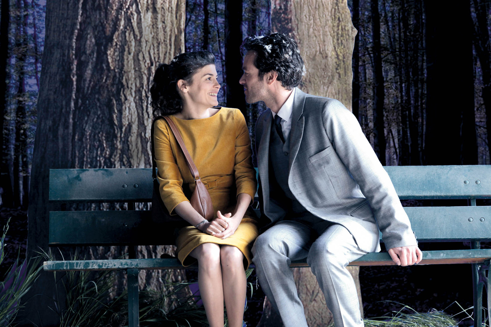

Compartilhamos com vocês uma breve linha do tempo da nossa história de amor. Por meio de fotos e textos, contamos alguns momentos marcantes, em ordem cronológica, desde o primeiro encontro até o momento em que decidimos subir no altar.

Até o momento, o dia mais feliz das nossas vidas. No dia 28 de março celebramos com os amigos nossa vontade de construir uma família. Chegamos neste dia já com a benção do Zé Roberto e da Sandra, pais da Marina, e meus pais, Arnaldo e Valentina, sentindo o apoio deles na nossa decisão. O mês de março iniciaria a contagem regressiva, de 12 meses, até o grande dia que estamos planejando com tanto carinho.
28 março de 2015

Começamos o ano de 2015 visitando um dos museus mais incríveis do Brasil. Neste dia gastamos perna no Inhotim para conhecer os espaços e apreciar as exposições. Além da Marina meus pais e o Henrique, meu irmão, acompanharam este passeio.
Janeiro, 2015

Aproveitamos as festas de final de ano para reunir as familías e também para parabenizar a Sandra no seu aniversário de 54 anos. Meus pais, Arnaldo e Valentina, sairam de São José dos Campos até Bom Despacho para visitar o sítio Guariba, conhecer mais gente da família da Marina e festejar o novo ano.
Dezembro, 2014

"E assim chegar e partir
São só dois lados
Da mesma viagem"

Carinho como este é uma constante em nossa caminhada. Neste dia, Marina preparou uma surpresa com uma brincadeira tipo " Caça ao tesouro". Nestes pequenos detalhes que confirmamos e aquecemos o nosso verdadeiro amor.
Setembro, 2014

Desde quando nos conhecemos tivemos a oportunidade de visitar duas vezes a cidade de Aparecida do Norte, em São Paulo, para conhecer a basílica de Nossa Senhora Aparecida. Até hoje, não podemos nos esquecer da quantidade de bençãos que recebemos e mesmo diante das maiores dificuldades lembrar do que realmente importa.
Agosto, 2014

Novidade para os dois. Gramado e Canela foi uma viagem que fizemos logo após o carnaval. Foi nossa primeira viagem longa, de fato, onde além do turismo tradicional pudemos conhecer melhor um ao outro e voltarmos ainda mais certos das escolhas. As duas cidades gaúchas são perfeitas para um passeio a dois (e comer chocolate também).
Março, 2014

Em março, mês do carnaval, fui à Belo Horizonte para passarmos juntos o feriado. Os amigos do Padre Eustáquio combinaram de aproveitar o dia num sítio em Igarapé e para lá que fomos.
Março, 2014

Nosso primeiro reveillon aconteceu em Lavras Novas, um distrito de Ouro Preto. Foi nossa primeira viagem planejada, de carro, juntos e foi um verdadeiro retiro para nós. Aproveitamos a dois a virada e pudemos relaxar bastante.
31 de Dezembro de 2013
Capítulo 1, Parte 1
“ainda acredito no amor, na cumplicidade, em um projeto de vida a dois.”São José dos Campos, 14 de Dezembro de 2013
Capítulo 3, Parte 1
“Como é prazeroso ter alguém com quem você possa viver momentos como estes. E o melhor ainda, querer e sentir que é recíproco a vontade de realizar planos em comum, passeios e aventuras...”Belo Horizonte, 9 de Dezembro de 2013

Muitas vezes nosso refúgio para fugir da agitação da cidade é um pequeno município apelidado de Macacos. Visitamos inúmeras vezes e buscamos lá sempre recarregar as baterias.
12 de Outubro de 2013

No segundo mês surgiu uma oportunidade de nos vermos, pela primeira vez, em outro estado. A Marina iria acompanhar os primos ao Rock'n Rio e mais uma vez as coisas se ajeitaram para estarmos juntos e aproveitarmos. Dessa vez foi menos de 24 horas pois precisava ir para São José extrair o siso!
13 de Setembro de 2013

Convidei a Marina para ir conhecer um dos meus lugares favoritos na cidade, a Confraria São Gonçalo, aonde a hospitalidade e boa música caminham juntos. Fazia parte das minhas segundas-feiras e agora faz parte da nossa história.
14 de Agosto de 2013
Combinamos de ver um filme na tarde de domingo no Belas Artes (um dos mais tradicionais cinemas de rua de Belo Horizonte). Em cartaz o filme escolhido foi o francês L'écume des jours. Entramos na sala sem muitas expectativas quanto ao filme mas com altas expectativas quanto ao futuro daquele encontro. Ao final da sessão saímos felizes com o roteiro e já de mãos dadas.

11 de Agosto de 2013
Nosso primeiro beijo!
07 de Agosto de 2013
Da união de Arnaldo e Valentina nasce o primeiro filho do casal
São José dos Campos, 25 de Abril de 1986
Da união de José Roberto e Sandra nasce o segundo filho do casal.
Belo Horizonte, 26 de Março de 1986